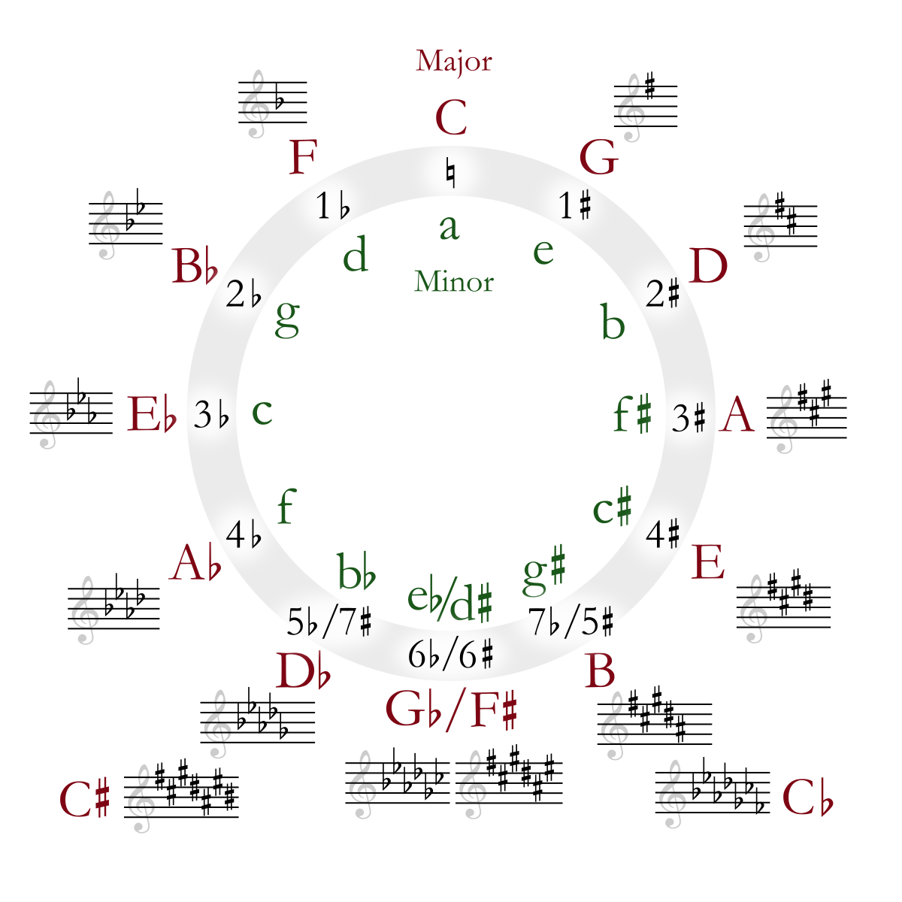

Uma progressão de acordes é uma sequência de acordes tocados em sucessão. As progressões criam movimento harmônico e estabelecem a base para a melodia e ritmo de uma música. Elas são uma parte essencial da composição musical e determinam a "direção" da música.
Certas progressões de acordes são amplamente usadas em muitos gêneros musicais. Essas progressões populares são apreciadas por suas qualidades harmônicas, como a tensão e resolução que geram. Aqui estão algumas das progressões mais comuns:
Em uma progressão de acordes, certos acordes criam tensão, enquanto outros resolvem essa tensão. Um exemplo clássico disso é o movimento da dominante (V) para a tônica (I), onde o acorde dominante cria tensão e o acorde tônico resolve, trazendo um senso de finalização.
Outros acordes, como acordes menores ou diminutos, também podem ser usados para adicionar tensão, enquanto os acordes maiores geralmente trazem uma sensação de estabilidade ou resolução.
As progressões de acordes funcionam dentro de um sistema de funções harmônicas. Abaixo estão as três principais funções harmônicas:
Entender essas funções permite compor e improvisar usando progressões que têm um forte senso de movimento harmônico.
Um dos padrões mais usados em progressões é o ciclo de quartas ou quintas. Neste ciclo, os acordes se movem por intervalos de quartas ou quintas justas, criando uma progressão forte e resolutiva.
No ciclo de quintas, cada acorde se move cinco graus acima do anterior, enquanto no ciclo de quartas, o movimento é descendente em quartas. O ciclo de quintas é frequentemente usado para criar tensão que se resolve de volta à tônica.
|  |
|---|
Cada gênero musical tende a favorecer certos tipos de progressões de acordes. Por exemplo:
Entender as progressões mais comuns em cada gênero ajuda a compor ou tocar músicas de estilos variados.
Uma boa maneira de praticar progressões de acordes é começar com progressões simples em uma tonalidade e experimentá-las em várias inversões e ritmos. Tente tocar as progressões I-IV-V-I ou ii-V-I em diferentes tonalidades e estilos.
Usar backing tracks ou loops também é uma excelente forma de praticar progressões em um contexto musical real.